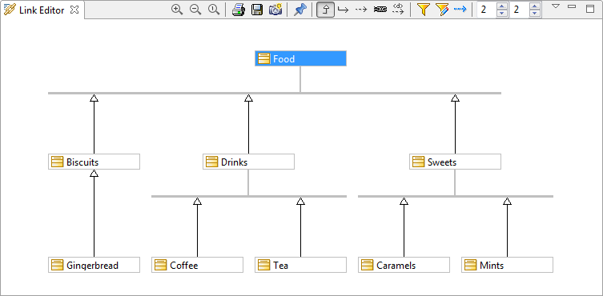

] : Switches the Links Editor from Visualize to Edit mode.
] : Switches the Links Editor from Visualize to Edit mode. ] : Opens the “Save as” window, in which you can configure the saving of Links Editor content in a file.
] : Opens the “Save as” window, in which you can configure the saving of Links Editor content in a file. ] : Prints the content of the Links Editor.
] : Prints the content of the Links Editor. ] : Zooms out.
] : Zooms out. ] : Zooms in.
] : Zooms in.
From the Links Editor toolbar:
] : Switches the Links Editor from Visualize to Edit mode.] : Opens the “Save as” window, in which you can configure the saving of Links Editor content in a file.] : Prints the content of the Links Editor.] : Zooms out.] : Zooms in.From the Links Editor view menu:
 ] : Displays links and elements depending on the type of links to display.
] : Displays links and elements depending on the type of links to display.From the Links Editor bottom bar:
 ] : When checked, displays Inheritance links, and creates them when elements are dropped into the Links Editor, if it is in Edit mode.
] : When checked, displays Inheritance links, and creates them when elements are dropped into the Links Editor, if it is in Edit mode. ] : When checked, displays Element Imports links, and creates them when elements are dropped into the Links Editor, if it is in Edit mode.
] : When checked, displays Element Imports links, and creates them when elements are dropped into the Links Editor, if it is in Edit mode. ] : Enables the Dependencies filter to be configured, selecting which stereotyped dependencies will be displayed/created.
] : Enables the Dependencies filter to be configured, selecting which stereotyped dependencies will be displayed/created. ] : When checked, displays NamespaceUses links.
] : When checked, displays NamespaceUses links.Downstream levels displayed : Defines the number of linked elements that will be displayed downstream from the selected element.
Upstream levels displayed : Defines the number of linked elements that will be displayed upstream from the selected element.
Note: For more information, see “Creating links using the Links Editor”.